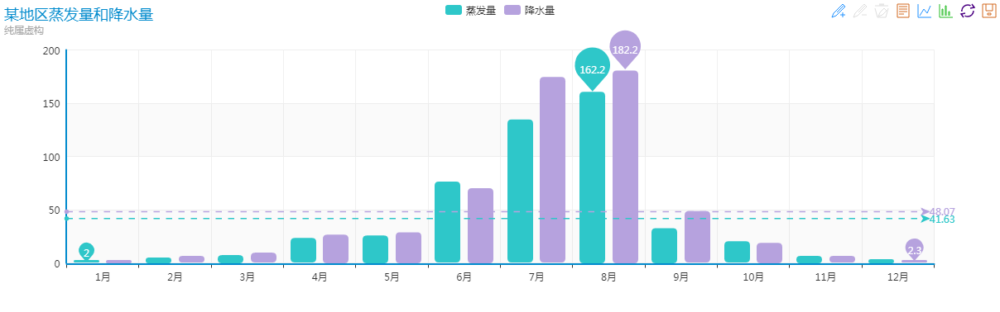
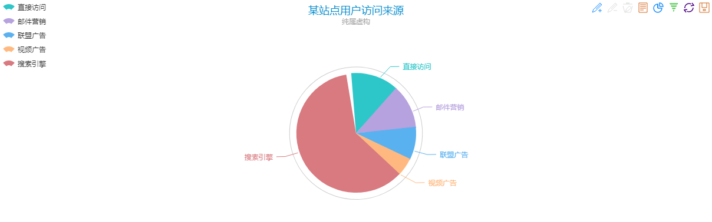
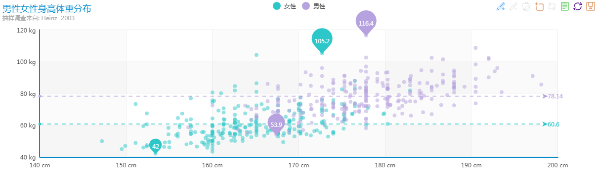

10年IT编程经验的老司机，和你唠唠前端的发展
本人在IT行业开发了近10年，去过腾讯，创过业，当初的“骗子马云”也成为了中国首富，在中关村“摆摊的刘强东”也娶了奶茶妹妹......而我，┭┮﹏┭┮，还在苦X的做开发，哎，就像伟大的哲学家“谁都不服就服你斯基”说过：三十岁前，努力拼搏奋斗，追求理想，可依然很痛苦，生活得不到改善，三十岁后.......你就开始习惯了。
好了不扯了，回归正题，我之前是做C#开发的（后台），那个年代的前端叫做“网页制作”，只需要写点静态页面，运气不好的需要自己设计PSD设计稿，运气好的去写一点jQuery效果，数据绑定等大部分交互工作都是交给后台来处理的，我们可以把它叫做 “前后端不分离，服务器渲染的项目”。
2013年，也就是我转前端的这年，JS如我预期一样开始崛起，部分公司已经开始做 “前后端分离，客户端数据渲染” 的项目了，jQuery和AJAX得到了更广泛的应用。与此同时，随着手机端的发展，H5开始逐步崛起，越来越多的公司把自己的产品搬到了移动平台上。从这会开始，网页制作有了个高大上的名字：“前端开发工程师 / H5开发工程师” 等。
2014~2016年，是JS高速发展的三年，前端开发就像雨后春笋，大规模生长，越来越多的公司重视前端岗位，开始加薪，开始扩张招人，开始安排更多的任务责任给前端。对应的技术也演变的越来越完善复杂，各种设计模式、模块思想、框架体系应用而生：
前端市场饱和了？
最近我发现了一个特别好玩的现象，总有人说前端市场饱和了。很多后台或者python培训机构的说，我也就忍了（毕竟林子大了什么鸟都有，为了招生不择手段是某些机构善用的把戏），但是很多从业者或者打算找前端工作（尤其是没有找到）的在说我就忍不了，这是正规场合，我不能写脏字，那我就善意的表达一下我内心的情绪：老话说 “坐井观天”，“吃不着葡萄说葡萄酸”，“不懂瞎比比”，“捕风捉影”...说的就是这类人。
先来一组到珠峰招聘前端人才的信息：
再来一组就业信息
最近有同学问我，你们珠峰签不签就业合同，别的机构都签，毕业薪资保￥6000，听到这我总会莞尔一笑，六千你还好意思说，现在的前端开发岗位，只有公司要不要你，很难出现低工资的，你说我技术不是很好，找个低薪的岗位先干着，不好意思，没有！而且，谁说我们珠峰不保就业了，珠峰培训是同行中保就业的“鼻祖”，15年年底我们就敢“低于￥9000退学费”，只不过后来学生感觉没啥意思，用他们的话说，要是目标薪资只￥9000，我来你珠峰干啥！ 前天有个小姑娘和我说：周妈我给珠峰拖后腿了，我才找了个￥12000的.....，O(∩_∩)O哈哈~，没错，在珠峰毕业，低于￥14000就是拖后腿了！